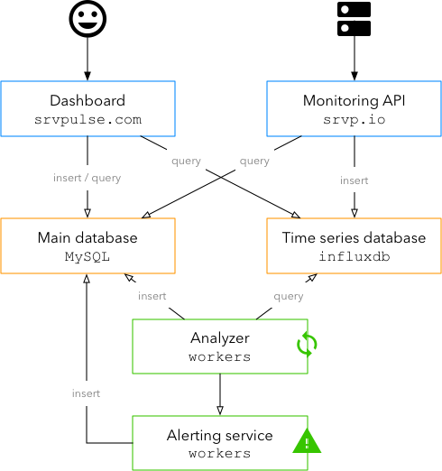

Golang project #01 - Project Introduction: Srvpulse
Contents
What could be a better way of learning a new language and its ecosystem than creating a new side-project?
Let’s wrap up the goals and user stories of this project. Srvpulse.com will be a background jobs (crons, workers, etc.) monitoring system that allows the user to be alerted when something goes wrong. Pretty simple, isn’t it?
Why golang ? x framework would have been better! While golang is clearly one the best languages to complete some of this project components it’s true that using any fully-fledged web framework (Django, Laravel, etc.) could have been easier for components like the web dashboard. But who cares? I’m here to learn.
This project will have two domains name attached:
- srvpulse.com
- srvp.io
Let’s list our user stories:
Dashboard and API
The following features will be exposed as a web interface and a REST api.
- A user can register a new account and login to his account
- A user can recover a lost password
- A user can setup 2FA
- A user can setup different alerting channels
- Slack
- PagerDuty
- A user can create, edit and delete monitoring checks
- A user can define alerting rules on a check
- crontab spec
- duration
- auto-detection of a change in pattern
- A user can assign alerting channels to a check
- first alert conditions
- reminders settings
- A user can define alerting rules on a check
- A user can pause a check
- A user can list all their checks on a list along with their status
- A user can display a specific checks with its details: alerts history, rules and settings
Monitoring API
- The API must be non-blocking. We don’t want to make those job fail if we have a problem, do we?
- A user can ping the monitoring API with a check ID
- A user can notify the API of a job start
- A user can notify the API of a job completion with an optional status, summary and report
Architecture

- Dashboard (
golang): Web and API layer for managing the account and the checks - Monitoring API (
golang): Fast REST API for sending ping for the checks - Main database (
mysql): will hold users, accounts and checks configuration - Time series database (
influxdb): will store all calls made to the API - Analyzer (
golang): Will query the time series database to detect anomalies based on the rules for every check - Alerting service (
golang): gateway to send notifications through the different channels
Deployments
- Code will be hosted at gitlab.com
- CI/CD will be executed via Gitlab CI
- The production artifacts will be build as Docker images to allow for some scalability (a lot of work needed there…)
Questions marks
- Is
influxdbcapable of handling a lot of time series in the same measurement? We will keep only one tag (the check ID) to reduce the cardinality - Is
influxdbcapable of storing the reports along the points? - How should the Analyzer parse and query the databases to get a list of checks to control?
Author Guillaume Moigneu
LastMod 2018-04-02